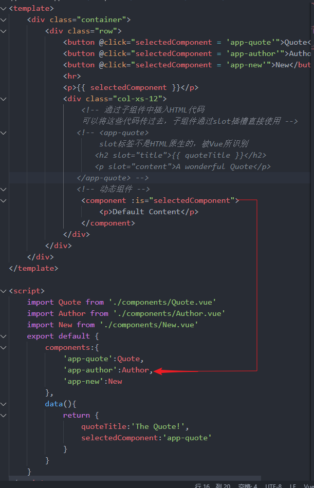

上节已经学了组件之间传值的三种方式，但是这些方式只适用于传值，而不适用于传HTML代码（不是说不能，只是比较复杂，可以将HTML当做字符串传，然后通过v-html将字符串转成HTML）
这节将讲述插槽slot
具体实例：
父组件中
<!-- 通过子组件中插入HTML代码
可以将这些代码传过去，子组件通过slot插槽直接使用 -->
<app-quote :quote="quote">
<h2>The Quote</h2>
<p>A wonderful Quote</p>
</app-quote>
子组件中
<!-- 插槽 -->
<slot></slot>
要注意的两点：
一：
父组件插入到子组件的HTML代码不会被父组件的样式渲染，而是被子组件的样式渲染
父组件
h2{
color:red;
}
无效
子组件
h2{
color:red;
}
有效
二:
父组件插入到子组件的HTML代码可以使用父组件的Vue实例
父组件中
<!-- 通过子组件中插入HTML代码
可以将这些代码传过去，子组件通过slot插槽直接使用 -->
<app-quote :quote="quote">
<h2>{{ quoteTitle }}</h2>
有效
<p>A wonderful Quote</p>
</app-quote>
export default {
components:{
'app-quote':Quote
},
data(){
return {
quoteTitle:'The Quote!'
}
}
}
总结：对于插入到子组件的HTML，逻辑代码部分是在父组件中实现，样式部分是在子组件中实现。原因是代码作用域和样式作用域不一样
通过给slot命名实现在子组件中的分块使用
父组件中
<!-- 通过子组件中插入HTML代码
可以将这些代码传过去，子组件通过slot插槽直接使用 -->
<app-quote :quote="quote">
<!-- slot标签不是HTML原生的，被Vue所识别 -->
<h2 slot="title">{{ quoteTitle }}</h2>
<p slot="content">A wonderful Quote</p>
</app-quote>
子组件中
<div class="title">
<!-- 插槽 -->
<slot name="title"></slot>
</div>
<hr>
<div>
<slot name="content"></slot>
</div>
如果父组件不给插槽命名，Vue会将这个插槽作为一个默认插槽，子组件中使用这个默认插槽也不需要命名
如果子组件中使用的命名插槽并未得到父组件的传值，则可以使用默认的值
<div class="title">
<!-- 插槽 -->
<slot name="title"></slot>
<span style="color:#ccc">
父组件中没有命名为subtitle的插槽，因此这里直接使用默认参数
The Subtitle
<slot name="subtitle">The Subtitle</slot>
</span>
</div>
插槽可以用于轮播图
使用动态组件
使用component标签声明，该标签被Vue识别
使用is属性作为选择器，值为字符串，每个字符串对应一个components属性中声明的组件
功能：通过点击按钮选择组件
<button @click="selectedComponent = 'app-quote'">Quote</button>
<button @click="selectedComponent = 'app-author'">Author</button>
<button @click="selectedComponent = 'app-new'">New</button>
<hr>
<p>{{ selectedComponent }}</p>
<div class="col-xs-12">
<!-- 通过子组件中插入HTML代码
可以将这些代码传过去，子组件通过slot插槽直接使用 -->
<!-- <app-quote>
slot标签不是HTML原生的，被Vue所识别
<h2 slot="title">{{ quoteTitle }}</h2>
<p slot="content">A wonderful Quote</p>
</app-quote> -->
<!-- 动态组件 -->
<component :is="selectedComponent">
<p>Default Content</p>
</component>
</div>
import Quote from './components/Quote.vue'
import Author from './components/Author.vue'
import New from './components/New.vue'
export default {
components:{
'app-quote':Quote,
'app-author':Author,
'app-new':New
},

对于上面使用按钮在不同组件之间进行转换，对于其中一个组件来说，当选择这个组件后，再选择其他组件，这个组件已经被销毁了；当再次选择这个组件时，是重新创建这个组件，而不是使用的之前创建的这个组件
使用keep-alive标签保证组件不被销毁，避免重新加载组件造成时间消耗
<keep-alive>
<component :is="selectedComponent">
<p>Default Content</p>
</component>
</keep-alive>
动态组件生命周期钩子：
由于使用了keep-alive保证了动态组件不被销毁，则要使用activated和deactivated两种状态来表明用户选择（激活）了该组件和用户离开（失活）了该组件
export default {
data(){
return {
counter:0
};
},
destroyed(){
console.log('Destryoed!');
},
deactivated(){
console.log('Deactivated');
},
activated(){
console.log('Activated');
}
}